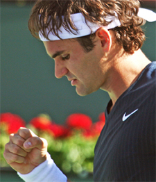
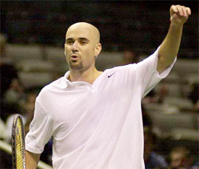
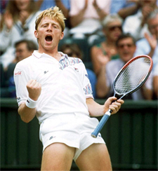
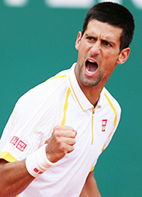
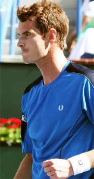

Previous: What is Confidence? (Part 2) | 🏠 Mental Game Home | Next: When Momentum is Against You
What Is Locker Room Power?
Comprehensive unified tennis knowledge base — Fundamentals, Stroke Analysis, Reference Library, and more
What Is Locker Room Power?
David Sammel

Locker Room Power is an aura surrounding an athlete.
Locker Room Power is a positive aura that surrounds an athlete. I believe it is the X-Factor in competition. Understand it and you create an edge. Understand it and you also have the ability block it when it is used against you.
Locker room power is an aura of invincibility that intimidates other players. Locker room power creates a fear factor that saps opponents' desire and self-belief. It makes them nervous and prone to mistakes.
It can cause them to lose confidence during a tough match and allow doubt to creep into their minds in a crisis. Players with locker room power often win matches before stepping on court.
In sport, the talk surrounding a player determines how well his game is perceived. Players with locker room power are discussed positively by other athletes.
Locker room power doesn't just incorporate the setting of the locker room. It encompasses the whole competition environment.
It is in the restaurant, gym, practice courts, press conferences, hotels, and the treatment room. All of these environments are where the smallest details of an athlete's lifestyle are under scrutiny.
Myth on Top of Reality
Simply put locker room power is the myth about a player created on top of the reality. Compared to other qualities of great players such as desire, shotmaking or self-belief, it is far less tangible, but often more determinate.

Sometimes you can tell who will win just by the look.
How many times have you heard comments like these, or thought them yourself? "He had that look about him. It wasn't about forehands and backhands. You could just tell he was going to win."
Andre Agassi understood the power of aura when he said, "I've always noticed the way players silently anoint the alpha dog in their midst."
Tim Henman describes an example of the effect of locker room power in a match against Boris Becker. "When I was called to court I walked out of the locker room. Boris however made me wait in the corridor for a good few minutes. In those final moments I became a little unsettled. I realized afterwards that he totally dictated the time--he sent the message that the match would be played according to his terms."
All top flight competitors, coaches, and managers know that there is a psychological battle to be won. They instinctively, or through hard earned experience, know when they have to apply pressure to try to gain the upper hand.
Building the Aura

Locker room power is built on substance not spin.
Locker room power is an aura built on attitude. It is created by a combination of intent, commitment and practice. This means it is crucial to adopt the right thoughts and feelings from the start.
You will need to create a picture in your mind of how you look, play and behave after you have achieved your goals. This is a blueprint to work towards, a finished picture of the product which is you the champion.
You are building an advertising campaign of your abilities as they develop. But this campaign is built on substance not spin.
Building locker room power is putting things in place in your mind so you have a plan of where you are heading mentally. This in turns sets the physical work in motion. The work, the preparation, the commitment, the improvement and the attitude are real and reflections of the message you convey to the outside world.
Many players hope to be successful but this hope is undermined by the bare fact that deep down they know they are not working hard enough. This causes them to hand over locker room power to those players who are doing the work.
To develop your personal aura, you will need to build powerful weapons that are the base of your confidence. You will need to build your game plan around these weapons to hurt opponents.

An aura built on attitude.
Strengthen your weaknesses if they begin to undermine your ability to use your weapons effectively. But otherwise, do not waste time trying to eliminate them. Build a vision of the end result and slowly work to merge the picture of where you are now into this future representation of yourself.
Video
It is important to know what your current image is saying to the world at large. One of the best ways to do this is to watch a video recording of you walking onto court and then playing a match. Is your demeanor showing someone confident and keen to play, or does it show someone negative, nervous, and scared?
As well as managing your nerves, you will need to attend to and manage your locker room language. Never underestimate opponents or talk in a manner that can damage your reputation.
Locker room walls have eyes and ears! You never know who might be watching or listening in the clubhouse lounge, gym and restaurant, which are all extensions of the locker room.
Do not be afraid to put out positive publicity if it is true. For example, if you have Just finished a tough physical training block and are fitter than ever before, it is ok to tell people.

What is your image saying to the world?
This message only becomes powerful, however, if your actions support what you say, for instance, if you show in practice a desire to chase every ball and your extra speed and endurance are evident in your matches.
Your locker room power is cemented when an opponent thinks, "Wow this guy wasn't kidding when he said he was fitter than ever." Furthermore, he will tell other players after the match, regardless of whether he won or lost.
Locker Room Power starts with substance. But it is an exaggeration of reality. It encompasses perception as well as substance.
It is created when people begin to exaggerate the depth of your weaponry and opponents begin to feel that they need to play above themselves to compete with you. On any level this is double-edged.
Opponents think you are invincible and in turn you begin to feel immensely confident. This combination is very hard to beat.
Any Player Can Create It
Any person can create locker room power by simple actions with smart training, choosing the language you use carefully and producing an advertisement that reflects a great attitude towards competition.
If you advertise a bad product well, it can work against easily impressed and inexperienced players. However, bluffing is not sustainable in the long run.
The key is to make sure the product is good. The advertising will then simply reinforce the product adding to the perceived truth and potency of your locker room power.

As a younger pro Andy had temporary locker room power.
The Snowball
Most coaches and trainers attempt to find ways to help players to believe in themselves, but they ignore locker room power at their peril. It is important to understand this factor, because most matches and tournaments are still won by snowballing momentum.
A player's locker room power can build during a tournament when he wins a match and begins to ride a wave of confidence. This temporary force can become the breakthrough and the start of lasting power.
Use the momentum of a tournament victory or an exceptional result to work harder and galvanize your attitude. The real deal is someone who backs up a good performance with consistent excellence.
On his rise to the top four, Andy Murray developed temporary locker room power that nearly gave him the breakthrough to cement real fear in his opponents. He went into the Australian Open 2009 having beat the two best players in the world, Rafael Nadal and Roger Federer, in tournaments leading up to the event.
He seemed on the verge of becoming the alpha male but lost narrowly to Fernando Verdasco in the quarter-finals. At that point his locker room power was temporary at the highest level.
Had he won the tournament, it would have rocketed him to the top of tour. That had to wait for his victories at Wimbledon and the U.S. Open.

David Sammel is a registered ATP tour coach and a consultant across the spectrum of professional sport. He has spent 25 years coaching international players, has been a national coach for the Lawn Tennis Association, and was named one of the world's top 50 coaches by Nike. He is the head coach of Team Bath-Monte Carlo Tennis Academy located at the University of Bath, Bath England. He is a regular contributor in British media and tennis commentary and an editor for Tennishead Magazine.
Click Here for More Information on the Academy

When you think about the most successful athletes and people of all time, almost every one of them has a certain aura and invincibility in the way they present themselves in sport and to the world. Sometimes mistaken for arrogance, this self-belief is essential in succeeding in professional sport and in life in general too.
The best believe they're the best and they make their opponents believe they're the best too. Locker Room Power: Building an Athlete's Mind, describes and examines David's coaching philosophy, which is drawn from his relentless drive to help people improve at their game, utilizing his vast experience, knowledge and understanding of the mental aptitude required to succeed as a professional sportsperson.
Click Here to Order!
Source: tennisplayer.net archive — What Is Locker Room Power.docx (John Yandell teaching library, 2002-2022). Extracted and rendered as HTML for Tennis Future Lab.